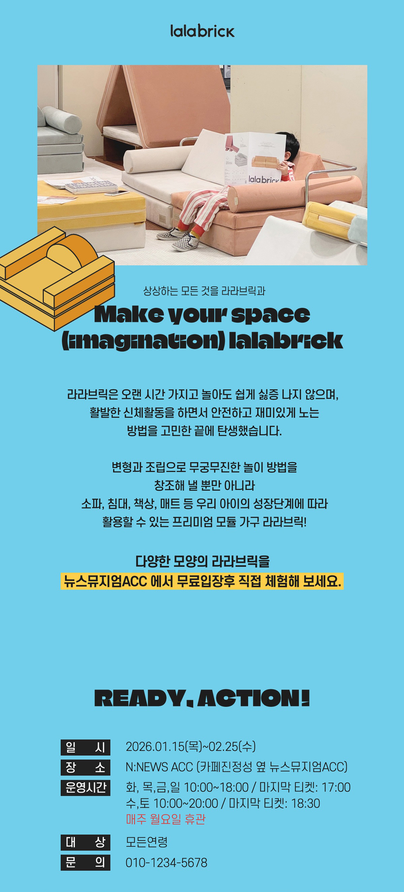
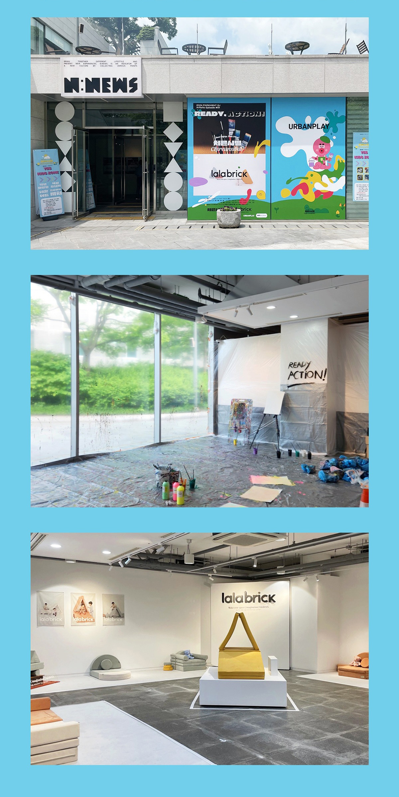
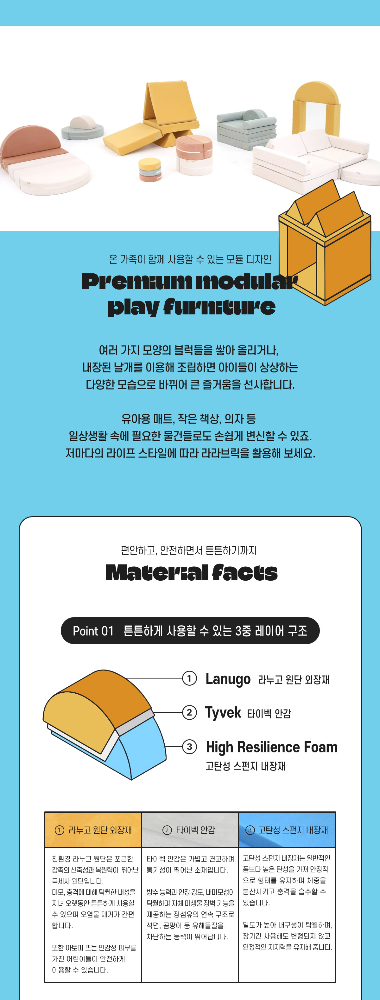

체험 공간에 적용된 모듈 가구 브랜드 상세페이지를 제작했습니다.
모듈 가구의 활용 방식, 공간 확장성을 중심으로 콘텐츠를 구성했으며,
가구의 기능과 사용 포인트를 직관적으로 전달하기 위해
아이콘을 직접 일러스트로 제작하여 정보 전달력과 시각적 완성도를 높였습니다.
여기에 행사장 이해를 돕기 위해서 뉴스 뮤지엄 ACC 현장을
직접 촬영한 사진을 활용하였습니다.



피그마를 작업하며 프로젝트에 들어갈 상세페이지를 직접 제작했습니다.
향이라는 추상적인 요소를 감성적으로 표현하되, 클래스 프로그램, 커리큘럼,
타임테이블 순으로 구성해 체험 흐름을 명확히 이해할 수 있도록 디자인했습니다.
또한 공방 소개를 통해 분위기와 브랜드 방향성을 전달하며,
사용자가 클래스 무드를 더 폭넓게 이해하도록 하였습니다.